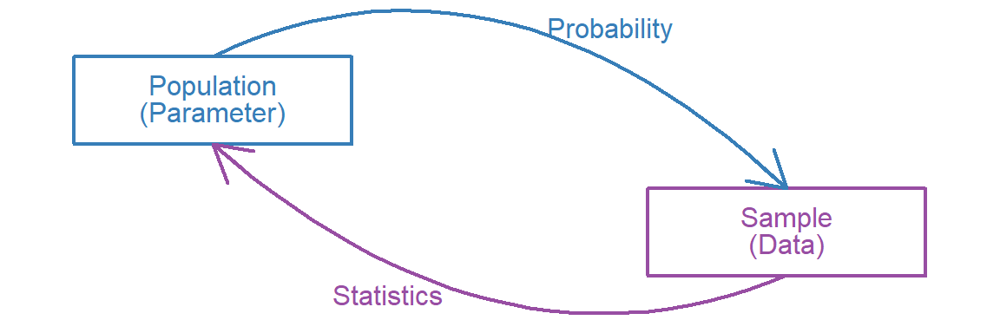
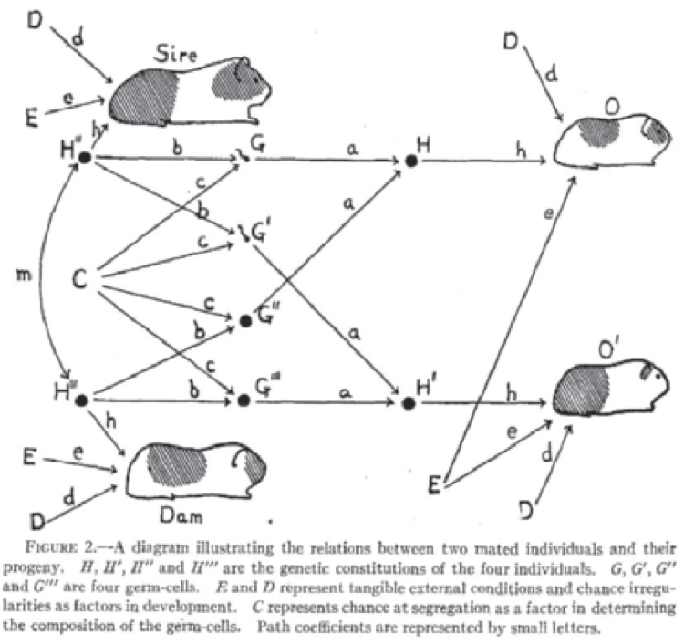
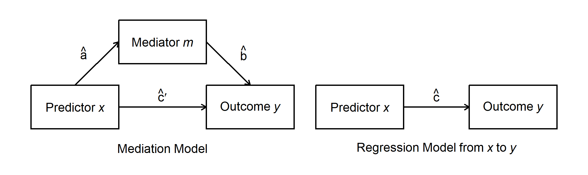
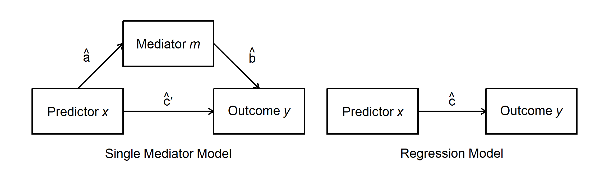
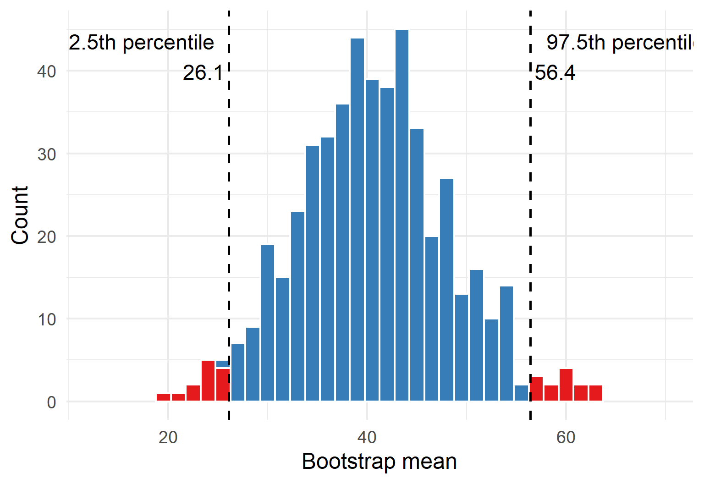

Lecture 30: Mediation
Concept of Mediation
Definition of a mediator:
- A variable that is intermediate in the causal process relating a predictor to the outcome
- Other names for mediator: intervening variable, process variable
- Mediation effect is also known as indirect effect
A statistical mediation model is a system or set of regression relationships between variables
Three ways to describe a mediation model:
- A variable is intermediate in the causal process relating the predictor to outcome
- A set of regression equations
- Path diagram
Model specification should be based on substantive theories and previous empirical results
Population \(\leftarrow\) Sample

- Statistics is about inferring things about a population from data
- Specifically, how are variables (cor)related?
- Does not imply anything about causes and effects, just patterns of covariation
Statistical vs. Causal
Statistical mediation
Goal: infer the correlational relationships among \(x\), \(m\), and \(y\) in a population, using a sample
Inference: from sample estimates (\(\hat{a}\), \(\hat{b}\), \(\hat{c}^\prime\)) to population parameters (\(a\), \(b\), \(c^\prime\))
Question: how do these variables covary in the population?
Requires: a correctly specified model and the usual regression assumptions
Indirect effect \(ab\) summarizes how much of the association between \(x\) and \(y\) runs through \(m\)
Causal mediation
Goal: infer how a population would change or behave under counterfactual conditions
Inference about potential outcomes: How would \(x \rightarrow y\) if some other intermediate variable (\(m\)) were different than it is?
Question: what would happen to \(y\) if we intervened on \(x\), with or without changing \(m\)?
Requires: additional assumptions
- Testable: \(x\) preceeds \(m\) in tme
- Untestable: no unmeasured confounding of \(x \rightarrow m\), \(m \rightarrow y\), and \(x \rightarrow y\)
- The same estimate of \(\hat{a}\hat{b}\) can be reported in both frameworks, but it supports different claims
- Statistical mediation needs only the data; causal mediation needs assumptions beyond the data (we’ll return to this at the end)
History of Mediation Analysis
Sewall Wright (1918) developed path analysis to analyze the effects of heredity and environment in determining the spotted pattern of guinea pigs
Wright used guinea pigs as variables to create the first path diagram

More History
Path analysis continued to be developed and popularized, notably in three disciplines:
- Econometrics
- Parallel works notably by Haavelmo (1943), Koopmans (1945), and the Cowles Commission (1952), Trygve Haavelmo won the Nobel Prize in Economics in 1989
- Sociology
- Rediscovered and popularized notably by Blalock (1961, 1962) and Duncan (1966)
- Psychology
- Rediscovered and popularized notably by Werts and Linn (1970) and Kenny (1979)
- Baron and Kenny (1986) is one of the most cited papers about mediation analysis
Baron, R. M., & Kenny, D. A. (1986). The moderator-mediator variable distinction in social psychology research: Conceptual, strategic, and statistical considerations. Journal of Personality and Social Psychology, 51, 1173–1182.
Examples
Attitudes \((x)\) \(\rightarrow\) intentions \((m)\) \(\rightarrow\) behavior \((y)\)
Abuse in Childhood \((x)\) \(\rightarrow\) Impaired Threat Appraisal \((m)\) \(\rightarrow\) Aggressive Behavior in Adolescence \((y)\)
Grades (\(x\)) \(\rightarrow\) self-esteem (\(m\)) \(\rightarrow\) happiness (\(y\))
Positive Parenting during Childhood (\(x\)) \(\rightarrow\) Self-esteem (\(m\)) \(\rightarrow\) Positive Parenting as an Adult (\(y\))
Assignment to an intervention program (intensive case management, \(x\)) \(\rightarrow\) number of housing contracts (\(m\)) \(\rightarrow\) days of stable housing (\(y\))
Psychotherapy \((x)\) \(\rightarrow\) attributional style (\(m\)) \(\rightarrow\) depression (\(y\))
Path Diagram

\(a\), \(b\), and \(c^\prime\) are regression coefficients
Path diagram visualizes the causal process and forces researchers to consider assumed causal relationships between variables
Set of regression equations:
\[\begin{aligned} \hat{y} &= \text{intercept} + \hat{b} \times m + \hat{c}^\prime \times x\\ \hat{m} &= \text{intercept} + \hat{a} \times x \end{aligned}\]
If \(c^\prime = 0\), \(m\) fully mediates the relationship between \(x\) and \(y\)
If \(c^\prime \neq 0\), \(m\) partially mediates the relationship between \(x\) and \(y\)
Quantifying Mediation
In a single mediator model, the relationship of \(x\) to \(y\) can be quantified as:
direct effect \(= \hat{c}^\prime\)
mediation effect \(= \hat{a} \times \hat{b}\)
total effect = direct effect + mediation effect = \(\hat{c}^\prime + \hat{a} \times \hat{b} = \hat{c}\)

Hypothesis Testing
Hypotheses:
- \(H_0\): \(ab = 0\)
- \(H_1\): \(ab \neq 0\) (two-tailed test)
- \(ab\) = population mediation effect
Complication: sampling distribution of the mediation effect is generally non-normal
There are different ways to test for the mediation effect:
Sobel’s Method - not recommended
Bootstrapping - recommended, what we’ll use in this class
Product of Moments - recommended
Monte Carlo - recommended
To test, we construct the confidence intervals of the mediation effect
If the confidence interval does NOT include zero, we reject the null hypothesis \(H_0\)
Example
National Educational Longitudinal Study of 1988 (NELS-88)
We’ll look at the following variables:
math(\(y\)): achievement in mathematics (scaled to have mean 50, sd 10 (\(T\)-scores))ses(\(x\)): student’s socioeconomic status (on a standardized metric)homework(\(m\)): number of hours spent on homework each week
Socioeconomic status is known to affect many areas of life, including math achievement
Is the effect of SES on math scores mediated (intermediately caused) by the time spent doing homework?
(1) Sobel’s Method
Developed by Sobel (1982, 1986)
First method for testing mediation effect
Assumes that mediation effect is normally distributed (incorrect)
Based on this assumption, construct a \((1 - \alpha)\%\) confidence interval for \(ab\):
\[\hat{a}\hat{b} \pm z_{\alpha/2} \times (\text{Standard Error of } \hat{a}\hat{b})\]
Standard error is an asymptotic approximation
For a single mediator model:
\[\text{Standard Error of } \hat{a}\hat{b} = \sqrt{\hat{a}^2 \times s_{\hat{b}}^2 + \hat{b}^2\times s_{\hat{a}}^2}\]
- \(s_{\hat{a}}^2\): standard error of \(\hat{a}\)
- \(s_{\hat{b}}^2\): standard error of \(\hat{b}\)
(2) Bootstrapping
Efron and Tibshirani (1986) developed the use of bootstrapping to construct confidence interval for ANY population parameter with unknown sampling distribution (e.g., mediation effect)
Procedures of bootstrapping \((1 - \alpha)\)% confidence interval for mediation effect:
Calculate the mediation effect in the original sample
Generate multiple bootstrap samples from the original sample data by randomly sampling with replacement many times (e.g., 2000 times)
Calculate the mediation effect in each bootstrap sample
The mediation effects from these bootstrap samples form the empirical sampling distribution of the mediation effect
\((\alpha/2)\)th and \((1 - \alpha/2)\)th percentiles of empirical sampling distribution are the upper and lower limits of the \((1 - \alpha)\)% confidence interval of the mediation effect
Bootstrap Demo
Suppose we observe a small sample of \(N = 10\) values:
- Bootstrapping treats the sample as a stand-in for the population, and resamples from it
- A bootstrap resample draws \(N = 10\) values from the original sample with replacement
Resampling
Original sample:
Resample 1 (10 values drawn with replacement):
(Values are sorted only to make repeated values easy to see)
Many Resamples
Confidence Interval

- Reject values outside, retain values in side
- Flexible procedure! Doable with almost any statistical analysis!
Comments on Bootstrapping
Simulation studies support that bootstrapping method produces correct Type I error rates and high statistical power relative to other methods
Performs similarly to the product of moments method
Although it is tempting to believe that bootstrapping works well for samples, bootstrapping works asymptotically (\(N\rightarrow \infty\))
There are some variants of bootstrapping (e.g., bias-corrected, bias-corrected-accelerated) that try to correct for the sampling distribution of the parameters by bootstrap. But recent research has found ordinary bootstrapping works best in various situations (e.g., Falk & Biesanz, 2015)
Recommended
Bootstrapping in R
Causal Mediation Analysis
Nonparametric Bootstrap Confidence Intervals with the Percentile Method
Estimate 95% CI Lower 95% CI Upper p-value
ACME 1.15709 0.74829 1.63966 < 2.2e-16
ADE 4.80842 3.91636 5.68671 < 2.2e-16
Total Effect 5.96551 5.15252 6.74381 < 2.2e-16
Prop. Mediated 0.19396 0.12872 0.27857 < 2.2e-16
ACME ***
ADE ***
Total Effect ***
Prop. Mediated ***
---
Signif. codes:
0 '***' 0.001 '**' 0.01 '*' 0.05 '.' 0.1 ' ' 1
Sample Size Used: 519
Simulations: 1000 (3) Product of Moments
Aroian (1947) and Aroian, Taneja, and Cornwell (1978) developed the theoretical probability distribution of the product of two normal variables
Based on the central limit theorem, when sample size increases, sampling distribution of a regression coefficient (\(\hat{a}\) or \(\hat{b}\)) is closer to normal distribution
MacKinnon and colleagues (2002) utilized this theory to develop the confidence interval for the mediation effect \(\hat{a}\hat{b}\)
This method requires these inputs:
\(\hat{a}\) and \(\hat{b}\)
standard error of \(\hat{a}\), standard error of \(\hat{b}\)
correlation between \(\hat{a}\) and \(\hat{b}\) (for a single mediation model, correlation always = 0)
Comments on Product of Moments
- Simulation studies support that the product of moments method produces correct Type I error rate and high statistical power relative to other methods
- Recommended
(4) Monte Carlo Sim
Procedures:
Based on central limit theorem, when sample size increases, sampling distribution of \(\hat{a}\), \(\hat{b}\) is closer to normal distribution
Randomly generate multivariate normal variables for \(\hat{a}\), \(\hat{b}\):
- means of variables = \(\hat{a}\) and \(\hat{b}\)
- variances of variables = squared standard errors of \(\hat{a}\) and \(\hat{b}\)
- covariance of variables = covariance between \(\hat{a}\) and \(\hat{b}\)
- simulated multivariate normal variables represent the sampling distribution of \(\hat{a}\) and \(\hat{b}\)
Compute mediation effect \(\hat{m} = \hat{a} \times \hat{b}\) using these simulated variables
Like in bootstrapping, \((\alpha/2)\)th and \((1 - \alpha/2)\)th percentile of the mediation effect above = \((1 - \alpha)\)% confidence interval for the mediation effect
Comments on Monte Carlo
Simulation studies support that Monte Carlo produces correct Type I error rates and high statistical power relative to other methods
Its performance was similar to product of moments method and bootstrapping
Can take some time to run
Recommended
Effect Size Measures
Two types:
Effect size for individual paths (\(\hat{a}\), \(\hat{b}\), \(\hat{c}^\prime\))
Correlations
Partial correlations
Standardized regression coefficients
Effect size for mediation effect (\(\hat{a}\hat{b}\))
Ratio of mediation effect to the total effect
Ratio of mediation effect to direct effect
\(R^2\) attributable to the mediation effect
Standardized mediation effect
Effect Sizes for Individual Paths
Correlations between \(x\), \(m\), and \(y\)
Correlation between \(x\) and \(m\) (for \(\hat{a}\))
Partial correlation between \(m\) and \(y\) (for \(\hat{b}\), partialling out \(x\))
Partial correlation between \(x\) and \(y\) (for \(\hat{c}^\prime\), partialling out \(m\))
Standardized regression coefficients for \(\hat{a}\), \(\hat{b}\), and \(\hat{c}^\prime\)
- Interpretation: change in standard deviations in the dependent variable for a standard deviation change in the independent variable
Correlations and standardized regression coefficients tend to be useful/accurate with 50+ subjects
Effect Size for Mediation
- Ratio of mediation effect to total effect between \(x\) and \(y\):
\[\frac{\hat{a}\hat{b}}{\hat{a}\hat{b}+\hat{c}^\prime}\]
- This effect size usually requires sample size of 500 to perform well
More Effect Size for Mediation
Effect Size for Mediation Effect
- \(R\)-square attributable to the mediation effect:
\[r^2_{ym} - (R^2_{y,mx} - r^2_{yx})\]
This effect size works reasonably well at small sample sizes
\(r^2_{ym}\): squared Pearson correlation between \(y\) and \(m\)
\(R^2_{y,mx}\): \(R\)-square of the regression \(x\) and \(m\) predicting \(y\)
\(r^2_{yx}\): squared Pearson correlation between \(y\) and \(x\)
\(R^2\) for Mediation Effect
- Mediation effect standardized by \(SD\) of \(x\) (\(s_x\)) and \(SD\) of \(y\) (\(s_y\)) (Cheung, 2009):
\[\hat{a}\hat{b}\times\frac{s_x}{s_y}\]
- This effect size usually requires sample size of 500 to perform well
Other ‘Third’ Variables
Suppressor
- A variable that is related to \(x\) but not related to \(y\)
- The relationship between \(x\) and \(y\) increases when adjusting for the confounder
- Example: Horst (1941) found that the relationship between mechanical ability and pilot performance increases when verbal ability is included in the model
Distorter
- A variable reverses the sign of the relationship between \(x\) and \(y\)
- A variable changes a zero relationship between \(x\) and \(y\) to a nonzero relationship
- Example: Relationship between state-level average SAT scores and educational expenditures flips when including the proportion of students who take the SAT
When suppressor or distorter is a mediator, it can lead to an inconsistent mediation model
Inconsistent Mediation
Occurs when the relationship of \(x\) to \(y\) increases in magnitude when the mediator is included in the analysis (MacKinnon, Krull, & Lockwood, 2000)
In other words, \(\hat{c}^\prime\) is larger in magnitude than \(\hat{c}\)

Other Issues in Mediation
Statistical power analysis for mediation effect:
- Monte Carlo simulation (Thoemmes, McKinnon, & Reiser, 2010)
Moderated Mediation (Edwards & Lambert, 2007)—a combination of mediation and moderation models
Causal inference of mediation effect (Imai, Keele, & Tingley, 2010)
\(x \rightarrow m\) has no problem if \(x\) is successfully randomized
\(m \rightarrow y\) has problems when \(m\) is not randomized
- Means we cannot guarantee no unmeasured confounder!
Product of regression coefficients is only valid to quantify mediation effects when the mediator and outcome are normal
How to quantify and test the mediation effects for categorical mediator and outcome in mediation analysis?
Causality Revisited
Statistical mediation
Goal: infer the correlational relationships among \(x\), \(m\), and \(y\) in a population, using a sample
Inference: from sample estimates (\(\hat{a}\), \(\hat{b}\), \(\hat{c}^\prime\)) to population parameters (\(a\), \(b\), \(c^\prime\))
Question: how do these variables covary in the population?
Requires: a correctly specified model and the usual regression assumptions
Indirect effect \(ab\) summarizes how much of the association between \(x\) and \(y\) runs through \(m\)
Causal mediation
Goal: infer how a population would change or behave under counterfactual conditions
Inference about potential outcomes: How would \(x \rightarrow y\) if some other intermediate variable (\(m\)) were different than it is?
Question: what would happen to \(y\) if we intervened on \(x\), with or without changing \(m\)?
Requires: additional assumptions
- Testable: \(x\) preceeds \(m\) in tme
- Untestable: no unmeasured confounding of \(x \rightarrow m\), \(m \rightarrow y\), and \(x \rightarrow y\)
- Statistical mediation needs only the data; causal mediation needs assumptions beyond the data
- Causal inference is its own field and is not technically statistics!
APA Writeup
We tested whether weekly time spent on homework mediated the relationship between socioeconomic status (SES) and math achievement (\(T\)-score) using a percentile bootstrap with 1,000 resamples (\(N = 519\)). SES was positively associated with homework time, \(a = 0.51\), and homework time was positively associated with math achievement controlling for SES, \(b = 2.26\).
The indirect effect of SES on math achievement through homework time was statistically significant, \(ab = 1.16\), 95% bootstrap CI \([0.75, 1.64]\). The direct effect remained significant, \(c^\prime = 4.81\), 95% CI \([3.92, 5.69]\), indicating partial mediation. The total effect of SES on math achievement was \(c = 5.97\), 95% CI \([5.15, 6.74]\). Approximately 19% of the total effect was mediated by homework time (95% CI \([13\%, 28\%]\)).
Because neither SES nor homework time was experimentally manipulated, these results describe statistical mediation and should not be interpreted as evidence of a causal mediation process.
Comments on Sobel
Simulation studies support that Sobel’s method has lower statistical power than other methods for testing the mediation effect (e.g., MacKinnon et al., 2004)
Not Recommended